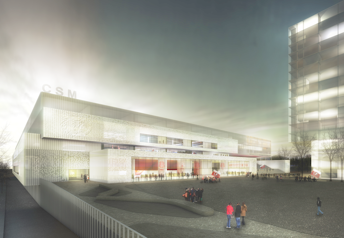
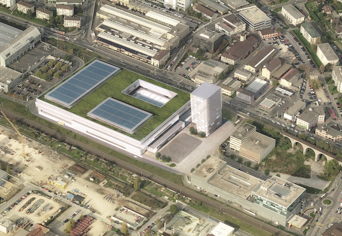
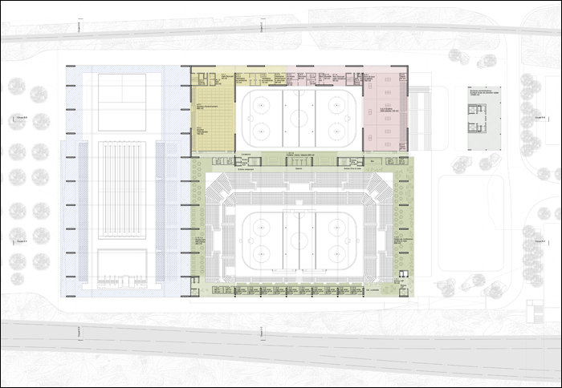
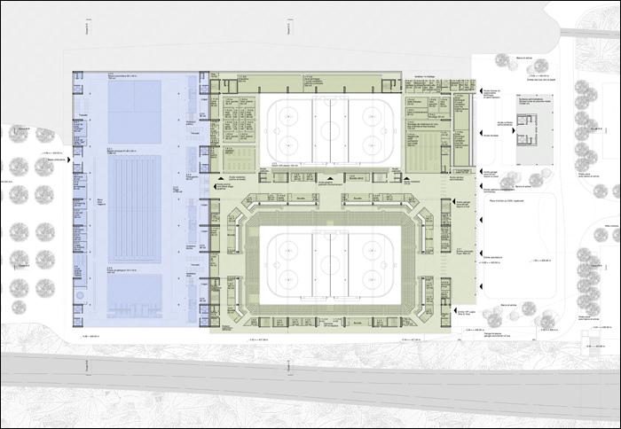
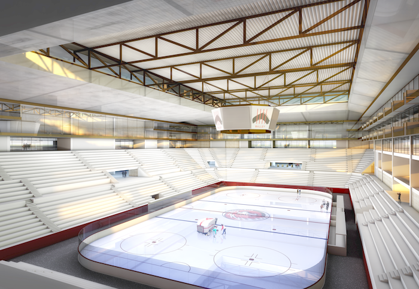
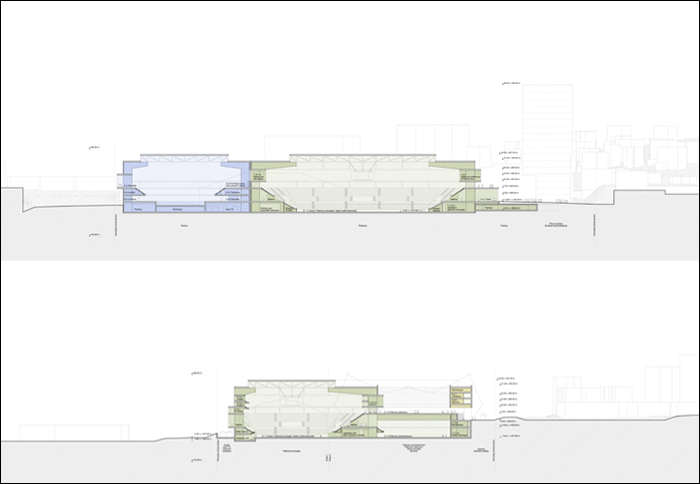
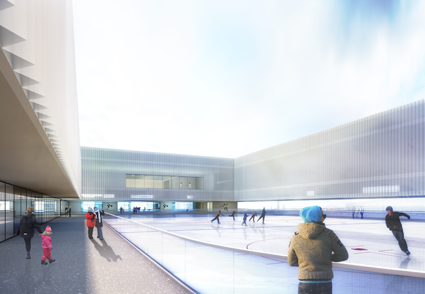

Project: SPORTCENTER, LAUSANNE








Project: SPORTCENTER, LAUSANNE
Location: Municipality of Renens and Prilly, Lausanne (VD)
Customer: CIGM, Centre Intercommunal de Glace de Malley SA, Prilly
Program: Hockey stadium (7’000-10’000 spectator), olympic swimming pool (2’000 spectator), table tennis and fencing hall
Budget: 206’000’000 CHF
Date: 2014
Type: open competition
Team: NYX architectes, Basler & Hofmann AG (structural engineer), ER Energies Rationnelles SA (mechanical engineer), SIMA/BREER (landscape architect)
Images: NYX architectes